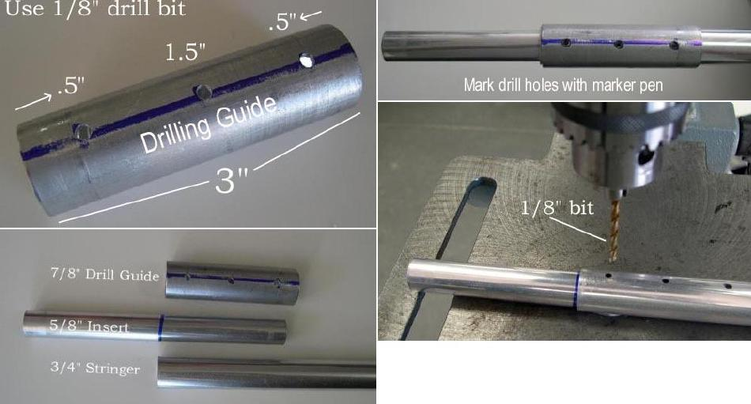

| Inserts (2 of 6) | Menu Last Page Next Page |
|
 Insert Drilling Guide - Half of the insert ( 3in) is riveted to the inside of the stringer. A drilling guide allows precise marking of the holes to be drilled. The guide is made of a 3in section of 7/8" aluminum tubing. Spacing for the holes is shown in the photo above. A drill press permits much more accurate drilling than a hand drill. If the holes are out of round or over-sized, the rivets will not be as tight initially and will loosen up more over time. Use a 1/8" drill bit. |
|